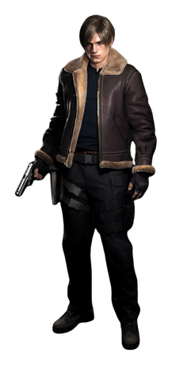

Leon Scott Kennedy (Japanese: レオン・スコット・ケネディ, Hepburn: Reon Sukotto Kenedi) is a character in Resident Evil (Biohazard in Japan), a survival horror video game series created by Japanese company Capcom. He debuted as one of the two player characters of the video game Resident Evil 2 (1998), alongside Claire Redfield. During the events of Resident Evil 2, Leon is a rookie police officer who arrives in the doomed Raccoon City late for his first day on the job, to be confronted by a zombie outbreak first-hand.
During the course of the game, he teams up with civilian survivor Claire Redfield, rescues the young Sherry Birkin, and is aided by the mysterious Ada Wong. Six years later, in Resident Evil 4 (2005), Leon returns as an agent for the U.S. federal government, part of a special anti-Umbrella Corporation task force, assigned to rescue the president's daughter, Ashley Graham, from a sinister cult. In Resident Evil 6 (2012), he continues to work for the U.S. government and reunites with Ada and an adult Sherry.
Leon is the protagonist of several Resident Evil games and novelizations. Leon appears in the CG animated films and in the animated miniseries Infinite Darkness (2021). In later games, such as the Resident Evil 2 remake (2019) and the Resident Evil 4 remake (2023), his features were based on Romanian model Eduard Badaluta. In the live-action films, Leon has been portrayed by actors Johann Urb and Avan Jogia. Video game publications list Leon among the most popular and iconic video game characters, and he ranks consistently as a fan favorite character of the franchise.
Concept and Design
Leon was created by Hideki Kamiya as a contrast to Chris Redfield from the original Resident Evil, who he felt was the "blunt, tough-guy type". Though Kamiya admitted that while he was a fan of characters like Chris, as it had already been done, he opted to take Leon's development in a different direction.[8] Leon was created for Resident Evil 2 as the staff wanted to use a character who had no experience with terrifying situations in contrast to using returning protagonists.[9] While he was originally designed as a veteran police officer, he was changed to a rookie after the original version of Resident Evil 2 (also known as "Resident Evil 1.5") had been scrapped.[10] Leon's design was inspired by Capcom artist Isao Ohishi.[1] While Kamiya created Leon alongside Claire, he was aided by novelist Noboru Sugimura in order to make the writing more appealing. Sugimura often revised the Resident Evil 2 scenario such as the multiple interactions the two player characters have and what weapon should each acquire.[11]
Elements from Leon's backstory from the Resident Evil 2 manual indicating having had a split with a woman were based on Kamiya's own life. Kamiya further commented that the relationship Leon has with Ada Wong is manipulative by the latter.[12] Speaking about the relationship between Leon and Ada, Urb said: "It's kind of like Mulder and Scully and an X-Files type of deal, where you're waiting for it to happen, but it never does. Maybe in the next one, I'm hoping."[13] Though director Makoto Kamiya initially wanted the film Resident Evil: Damnation to follow the dysfunctional romance between Leon and Ada, such idea was scrapped.[14] Writer Shotaro Suga further elaborated on the romance was briefly explored in Resident Evil 4 and since both never met in Resident Evil 5, there might have been a time when the two met as suggested by an interaction in the film.[15]
Kamiya was surprised at how popular Leon had become, praising his later evolution into a laid-back character for Resident Evil 4 and adding that he "fell in love all over again".[8] Leon was announced as Resident Evil 4's protagonist in November 2002.[16] As the game was developed, it was intended that Leon would be infected with the Progenitor virus.[17][18] This concept was expanded upon in 2004, when Leon was meant to contract a bizarre disease in his fight against the game's enemies.[19] In a documentary explaining the conception of the game's characters, it was stated that Leon was intended to "look tougher, but also cool".[20] His face was modeled after the game's animation department director Christian Duerre.[7] Masaki Yamanaka explains the change to Leon from Resident Evil 2 as being due to the experience he has gained since that game. He was buffed up accordingly, but Yamanaka did not want him "too buffed out".[20]
During the development of Resident Evil: Degeneration, producer Hiroyuki Kobayashi stated that Leon and Claire returned as protagonists due to their relationship and role in Resident Evil 2 and the recent release of Resident Evil 4. Leon was also added too because of his experience, especially with how he works with the new character Angela.[21] The producer said in 2009 would like to make another game starring Leon as the main character.[22] Resident Evil 5's producer Jun Takeuchi said that the series' fans "would really love" a video game featuring both Leon and Chris as the protagonists due to their popularity, and at the same time, it would be "pretty dramatic" if the two characters never met before the series would end.[23] Resident Evil 6's producer Kobayashi took a liking to Leon and decided to include him in the game since "he is central to the story".[24] His eventual inclusion led to make his story be more horror-based than the rest of the cast and give a sense of incomplete as players would need to choose the other protagonists to understand it.[25] His initial design is meant to be that of a civilian as well as giving the idea of being easy to fight.[26] For his China design, the clothing is meant to give an air of stylishness that contrasts Chris' military equipment. His key color was blue.[27] The initial jacket is also meant to fit a civilian look.[28]
To meet modern expectations for the 2019 Resident Evil 2 remake, the team decided to alter some character designs to better match the more photorealistic setting; for example, Leon no longer wears large shoulder pads, which were added to distinguish his original, low-polygon model.[29] The remake of Resident Evil 4 was worked with Leon having more abilities to overcome even the most difficult of situations, being envisioned as a more realistic person rather than as a superhero.[30] His characterization was also affected to react more to the enemies to the point he would often insult them.[31]
In the film Resident Evil: Vendetta, Kobayashi aimed for Leon to be properly portrayed as a main character though other staff members wanted Chris to be the lead. With Rebecca's addition, the team decided to use this addition in order to generate another contrast with Resident Evil 6.[32] The chase scene between Leon and dogs were nearly removed from the film.[33] Although Vendetta takes place after Resident Evil 6, director Eiichirō Hasumi made the mini-series Resident Evil: Infinite Darkness to be set before the game events in order to have more freedom with the younger incarnations of Leon and Claire, as he noted they were too popular and thus they wanted to be careful with their characterizations. The new character named Jason is meant to mirror Leon's sense of justice because of their similar backgrounds and ideas about how to deal with partners. The director was warned to remember the mini-series "was animation" during the interactions between Leon and Jason as he had to maintain tension.[34]
PortrayalLeon is voiced by Paul Haddad in Resident Evil 2. Paul Mercier takes the role in Resident Evil 4, Resident Evil: Degeneration and Resident Evil: The Darkside Chronicles.[4] Mercier remembers being happy with the localizer, Shinsaku Ohara, and the team in the making of the game ever since its early demo. Despite initial issues in the making of Resident Evil 4, Mercier was relieved of his work as Leon was not removed and felt joy when having the opportunity to work with director Ginny Mcswain. Nevertheless, Capcom requested Mercier to rerecord some lines because they felt Leon sounded too old for his age. While Leon acts sarcastic in Resident Evil 4, he behaves colder in the first CGI film; Mercier believes Capcom wanted a different take on Leon when developing the film. Nevertheless, the actor expressed joy in making the film. For the prequel Darkside Chronicles, Mercier expressed difficulties in voicing the younger Leon while still understanding how different he was in this title due to the hardships he faces.[35]

Mercier was replaced by Matthew Mercer in Resident Evil 6, Resident Evil: Damnation, Resident Evil: Revelations 2 and Resident Evil: Vendetta.[4] Mercer described himself as a fan and friend of Mercier and said that he felt honored to take over as the voice of Leon In an interview, he also detailed his interpretation of Leon and talked about the changes being made to the character.[36] Mercer elaborates the Leon from Damnation is far more "younger, cockier" character, and "actually follows his transition" in contrast to the "broken, downtrodden Leon that Resident Evil 6 begins with". Thanks to discussions with the director, Mercer was able to give his character more personality, linking him to the superhero Spider-Man who also has a tendency to perform oneliners. However, Mercer claims that since some of Leon's enemies are silent, there is a little area to perform more jokes.[37] Due to the dark narrative of 6 and Damnation, Mercer believes that Leon in Vendetta is a more terrified character who no longer trusts in his own skills.[38] In the Resident Evil 2 commercial directed by George A. Romero, Leon was portrayed by Brad Renfro.[2]
About Johann Urb's casting in Resident Evil: Retribution, the film's producer and director Paul W. S. Anderson said, "You have no idea how difficult it is to find someone with Leon Kennedy's hair [who] has to be manly and has to have these long bangs,"[39] adding that "if you put photographs of them side-by-side, it's almost like he was manufactured by Capcom."[40] Anderson said that the decision to include Leon and other game characters in the film was "fan-driven". Urb mentioned that he learned the video game Leon's mannerisms from watching clips posted on YouTube, commenting that "he doesn't have a high-pitched voice. I feel like he talks how I naturally talk, which is kind of slower."[40]
In Resident Evil: Operation Raccoon City, Christian Lanz voiced Leon.[4] Nick Apostolides is the voice and motion capture of Leon in the remake of Resident Evil 2 and Resident Evil 4, including in the film Resident Evil: Infinite Darkness.[41][4] Apostolides stated that thanks to the Resident Evil 2 remake he was able to have more exposure in his career.[42] The actor was shocked when he was cast for the role as he recalls being a fan of the franchise and noted that director needed a new voice for Leon due to the remake's younger persona. He provided the motion capture for such work. He went on to describe the character as a good nature young adult who stumbles into one of the biggest mayhems ever as a result of the outbreak in Racoon City. He was curious about the character's relationship with Ada Wong, believing the former had feelings for the latter but found this unhealthy due to how the franchise expands these two's connection.[43] His facial features on the remake of Resident Evil 2 were based on model Eduard Badaluta.[44]
Leon's Japanese actor Toshiyuki Morikawa said Leon has an unwavering sense of justice and the strength of his convictions, so he tries to make sure that everyone who enjoys the work can easily enter the world. He further said he enjoyed his character, while being a life-sized young man that people can find anywhere, he grows up by getting involved in big incidents and fully demonstrates his various skills, resulting in him growing confident and secure enough to be a hero. However, he had the hardest time in the Resident Evil 2 remake where he acted when he was younger. Morikawa was able to enter the world smoothly this time by playing the role of Leon, who has become more splendid after that.[45]
Appearances
In Resident Evil series
Leon debuted in Resident Evil 2 (1998), as one of the game's two protagonists alongside Claire Redfield. In the story, he is a police officer on his first day who arrives in the Midwestern United States town of Raccoon City just after a viral outbreak begins. He meets Claire by chance as she is chased by zombies created by the T-virus. Together, they flee towards the Raccoon City Police Department building b get separated and go on their own ways. They eventually meet again at the Umbrella Corporation underground research complex responsible for the viral outbreak.[46] Along the way, Leon teams-up with Ada, a mysterious and charming woman eventually revealed as a spy seeking a sample of the even more powerful G-virus. During the final confrontation against the seemingly unstoppable T-103 Tyrant that constantly pursues the characters, Ada tosses Leon (or Claire, depending on the scenario) a rocket launcher to destroy the creature. In the end, Leon faces and kills the grotesquely mutated Umbrella scientist William Birkin, and escapes from the self-destructing facility along with Claire and Birkin's young daughter Sherry.[46] Leon reprises his role in the remake of Resident Evil 2 (2019).[47]
An epilogue obtained after completing Resident Evil 3: Nemesis (1999) reveals that Leon later joined the U.S. federal government. In Resident Evil - Code: Veronica (2000), Claire contacts Leon to relay information to her brother Chris while stuck on Rockfort Island.[46] Resident Evil: The Darkside Chronicles (2009) features re-imaginings of Resident Evil 2 and Resident Evil - Code Veronica; it also contains a new scenario set in 2002 that involves Leon and the soldier Jack Krauser on a mission to search for Javier Hidalgo, an ex-drug lord who had been reported to do business with Umbrella.[48]
Leon is the protagonist of Resident Evil 4 (2005). In 2004, he is a special agent assigned to rescue the U.S. president's daughter Ashley Graham who is being held somewhere in Europe.[49] Her kidnappers turn out to be part of an evil cult known as Los Illuminados,[50] which has taken control of local villagers using parasites known as Las Plagas. As Leon searches for Ashley, he is captured and injected with the parasite. With help from Ada Wong and the Illuminados researcher Luis Sera, Leon is able to remove Las Plagas from his body and to rescue Ashley while confronting the cult. At the climax of the game, Leon kills the cult leader Osmund Saddler, but is forced to give a Plagas sample to Ada, who escapes in a helicopter, leaving Leon and Ashley to escape on a watercraft.[46] Leon reprises his role in the remake of Resident Evil 4 (2023).[51]
Leon is one of the protagonists in Resident Evil 6 (2012), alongside Chris Redfield, Jake Muller and Ada Wong.[46][52]
Leon also appears in several non-canonical games in the series. He stars alongside Barry Burton in the Game Boy Color-only Resident Evil Gaiden (2001).[53] Along with Claire, Leon is one of two playable characters in the browser and mobile game Resident Evil: Zombie Busters.[54] In the third-person shooter Resident Evil: Operation Raccoon City (2012) revisiting the Raccoon City incident, the players control Umbrella operatives sent to kill any survivors, and certain actions can lead to Leon's death.[55] He is also a player character in the "Heroes" mode of this game[56] and is portrayed by the computer-animated film Leon face model, Jamisin Matthews.[57] Leon, along with Claire's costume, appears in Resident Evil: Resistance (2020).[58]
In filmsLeon teams up with Claire Redfield in the 2008 computer-animated film Resident Evil: Degeneration in order to stop another outbreak of the T-virus on American soil. He returns in the sequel Resident Evil: Damnation,[59] where he is sent to investigate the use of the Las Plagas during a civil war in Eastern Europe. Starting with Resident Evil: Degeneration, Capcom modeled the computer-animated Leon Kennedy after Jamisin Matthews.[60] Unlike the live-action film series, the animated films are canonically set in the same universe as the game series, serving as the prequels to Resident Evil 5 and Resident Evil 6, respectively. A third computer-animated film Resident Evil: Vendetta (2017) starring Chris Redfield, Leon Kennedy and Rebecca Chambers. A guilty-ridden Leon joins Chris on rescue operation and decrypt Glenn Arias's plan of a large-scale attack on New York City.[61] Leon also appears in the Netflix series Resident Evil: Infinite Darkness (2021). He encounters zombies when the White House is targeted in a mysterious attack. He later meets Claire Redfield, who has been investigating a strange drawing made by a child refugee while working on a TerraSave-led mission to oversee construction of a welfare facility.[62] He returned in the sequel to the animated film, Resident Evil: Death Island.[63]